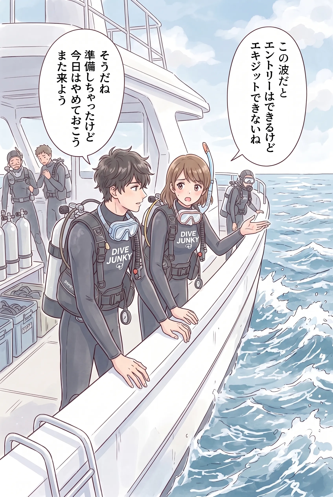

The road Orz passed by 2026 年 08 月
08 月 16 日 ( 日 )
今年の近畿総体男子ハンドボールの覇者は沖縄興南
2006 年のインターハイの開催地が大阪になったときに、たまたま今の高校ハンドボールの頂点を目指すチームってどんななんだろう、って思って大阪市立住吉スポーツセンターの体育館に何度か見に行った。
その時に見た興南のディフェンスがすごかったんだよな。あんなディフェンス戦術見たことなかった。
ディフェンスが他校とぜんぜん違って、ディフェンダーが全員 6m ラインから 12m あたりまで出てきて、オフェンスにプレッシャーをかけるというとんでもないディフェンスを展開してた。
プレッシャーをかけたら 6m ラインまで戻ってってのを繰り返していて、もちろん横にも斜めにも激しく動いていて 12m 辺りから内側に敵オフェンスの選手をまったく入れないの。
ポストプレイヤーが入ってきたらもちろんマークする選手が戻って、プッシュ型のディフェンスと相まってポストプレイも機能しないし、ディフェンス範囲 (ディフェンスラインじゃなくて、フットワークを駆使したとんでもない厚みのあるディフェンス範囲) に敵オフェンスが入れないから得点できないっていうとんでもないディフェンスだった。
他校はこの激しくプッシュしてくるディフェンスラインを崩せなくて、まともに得点できずに破れていった。
でもこれってディフェンスでかなり体力を消耗するので、トーナメントが進めば進むほど不利になるよな、と思っていたら、決勝で藤代紫水が後半に疲れが見えて動きが少し鈍ったそのディフェンスを突き崩したんだけど、それでも興南の選手たちはふんばって、ゲットした得点を脅威のディフェンスで守り切って藤代紫水を振り切ったんだよな。
本当にあれは死闘という言葉がマッチするすごい試合だったな。これが高校生なのか、ってため息がでた。
優勝は興南で準優勝が藤代紫水。すごいものを見せてもらった。
女子は京都の洛北が優勝候補で洛北もずっと応援してた。洛北強かったわ。予想通り優勝。
ついでの話になるけれど、そのときのインターハイの審判兼、審判長をしていたのが中学のときのハンドボール部の先輩。三島高校に進んで体育大学に進んで学校の体育の先生になって、その間もずっとハンドボール。
- Category :
- #Records of Orz's Road
- #ハンドボール
- #インターハイ
- #2026年インターハイ
- #男子決勝
- #2006年インターハイの衝撃
Dive #199 ダイビングの中止と宙ぶらりんな気持ち
「せっかく休みを取ったのに…」｜海況不良で中止になった日の気持ちの置きどころ
この人、再開したってことをこの note に何度も書いているけど、中断前はきっとリーダーシップレベルかインストラクターだよな、って思う。書いている内容や語り口が仕事でダイビングに関わってきたその人そのものだもの。
姿勢がダイバーに寄り添うこと。それがはっきりしている。
いい人だなって思う。
それで今回の投稿なんだけど、ダイビングが中止になって気持ちが宙ぶらりんになる人っていうのはよく見かけると思う。
でも気持ちが宙ぶらりんになるのは、自分がじゃなくて他人が中止を判断したからなんじゃないかとぼくには思える。

自分で海を見て、あ、これはだめだわ、って思って中止したのなら気持ちが宙ぶらりんになるなんてことはあまりない。だって海が今は潜るなって言ってる。海が今潜ると危ないからって言っている。
その声をきちんと受け止めた自分自身がこれはエントリーしないって決める。
それはたしかに潜れなくて残念ではあるけれど、ダイバーとして正しい判断をして、自分自身とバディ、そして一緒に潜ろうとしていた仲間を守ったことになり、全員の安全に寄与したということで、逆に満足感は高い。
満足感、高くない？そんなことない？
インストラクターやガイド並の的確な判断をしたわけだし。
「ちょっとこれは流石にあぶないな。やめとく？」
「そうやね、エントリーはできるけど、エキジットが危ないわ。俺もやめるに１票」
「わたしも怖いからやめときたい」
なんて感じでぼくらは中止したりしてた。もちろん Open Water I Scuba Diver の頃。みんな Open Water Scuba Diver だった。
自分たちできちんと判断するなら気持ちが宙ぶらりんになったりしないんじゃないかなって思う。
人任せにして海そのものを見ないと、やめとけって言うのが海じゃなくて人になっちゃうから、気持ちが宙ぶらりんになるんじゃないかな？
どうだろう？
どう思う？
海が荒れてたりするのにガイトが中止を判断したから文句を言うダイバーでありたい？
それとも海を見てこれはだめだと自分で判断して自分で行動を決めるダイバーになりたい？
どっちになりたい？
- Category :
- #Records of Orz's Road
- #ダイビング
- #スクーバダイビング
- #ダイバー
- #海の声
- #意思決定は誰のもの